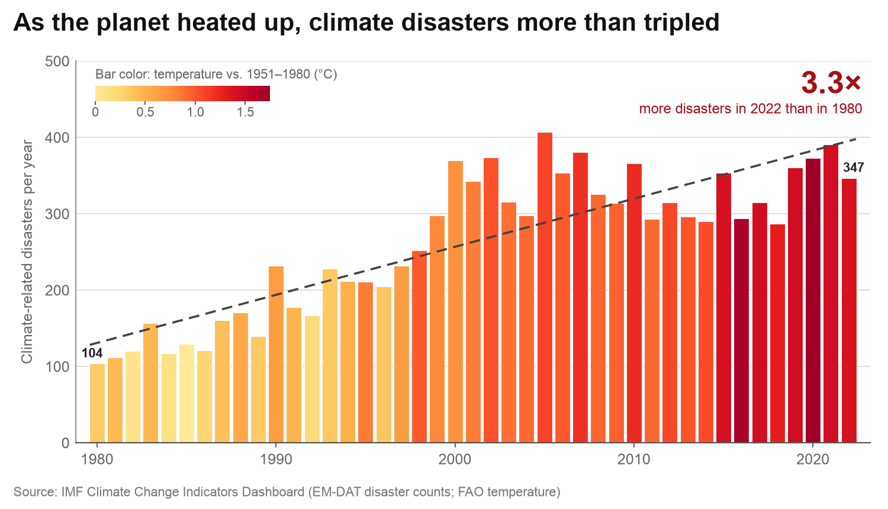
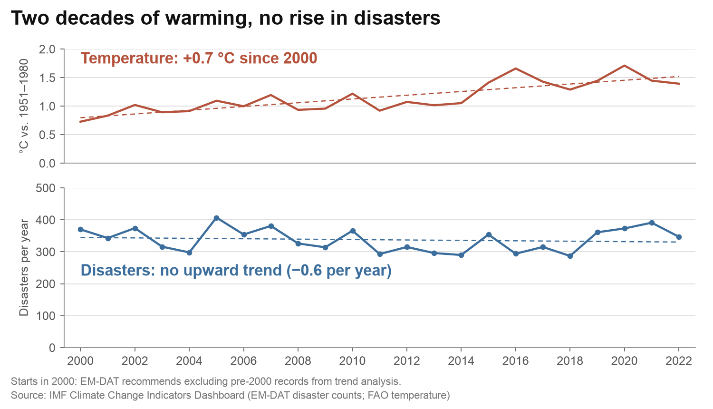

Proposition: Climate change is making natural disasters more frequent.
FOR the Proposition

Design Decisions and Rationale:
- Bar color shows temperature (−1.5). Taller bars are also redder, so the chart suggests that heat causes the disasters. However, the data only shows that both rose in the same years. A single neutral color would show the count trend without the implied cause.
- One straight trend line for 1980–2022 (−1.5). The dashed line keeps rising after 2000, but the bars are flat from about 2000 on. Instead, a moving average or a separate trend for each period would show the flat period.
- Title and “3.3×” callout (−0.5). The ratio 347 / 104 is correct, but it compares only two single years. In addition, the title “As the planet heated up” ties the rise to warming before the reader looks at the bars.
- Zero-based y-axis and cited source (+2). Bar heights are proportional to the counts, and the footer names the data sources. These honest choices make the reader trust the rest of the chart.
AGAINST the Proposition

Design Decisions and Rationale:
- Selective time window (−1). The chart starts in 2000, after the steepest rise in disaster counts. The footnote gives a true reason (EM-DAT recommends excluding pre-2000 records from trend analysis), so the choice looks neutral.
- Compressed disaster scale (−1.5). The counts stay between 287 and 407, but the axis runs from 0 to 500. This compressed scale makes the disaster line look flat. By comparison, an axis from 250 to 420 would show the year-to-year swings and the rise after 2018.
- Honest-looking frame (−0.5). The top panel shows the warming openly. Because the chart does not hide the warming, the reader also trusts the flat disaster line in the bottom panel.
- Computed trend labels (+1). Each panel states its least-squares slope (+0.7 °C since 2000; −0.6 disasters per year). Both numbers are correct for 2000–2022, so the claim rests on the data and not only on the title.
Final Reflection
I built both charts from the same IMF data: EM-DAT counts of climate-related disasters and FAO global temperature change. Arguing for the proposition was straightforward. The count rose from 104 disasters in 1980 to 347 in 2022, so the data already supported the claim, and my design work was mostly emphasis: a pointed title, the 3.3× callout, and a red color scale. Arguing against the proposition, on the other hand, was much harder, because no honest view of the full 1980–2022 series hides the rise. Because most of that rise happened before 2000, I had to find a time window and a scale that made the flat period after 2000 look like the whole story without making the reader suspicious.
What surprised me most was how much the deceptive chart depended on honest elements. For example, Figure 2 does not change a single data value. Its footnote is true, because EM-DAT does recommend excluding pre-2000 records from trend analysis, and its top panel shows the warming openly. In fact, these honest choices are exactly what make the reader trust the flat disaster line. The same data caveat also worked in opposite directions: in Figure 2 it justified a window that I chose for its result, whereas in Figure 1 I left it out. Neither chart misstates a number, yet the two charts lead readers to opposite conclusions.
I now define ethical analysis and visualization as presenting data so that a careful reader reaches the conclusion that the full data supports, and can see the choices that shaped it. By that standard, persuasion is acceptable when it adds emphasis to a claim that the data supports, for example a pointed title, a highlight color, or a callout of a correct number. However, persuasion becomes misleading when a choice changes the conclusion that a reader would draw from the full data, or implies a claim that the data cannot support. Two tests helped me draw this line. First, would the conclusion survive if the reader saw the data that the chart leaves out? Figure 2 fails this test, and a true footnote does not fix it, because the result chose the window, not the reason in the footnote. By contrast, starting Figure 1 in 1980 passes this test, because 1980 is the start of the full dataset, although an honest version would still mention the EM-DAT caveat. Second, does an encoding imply something that the data cannot show? This time Figure 1 fails: its temperature-colored bars suggest that heat causes disasters, while the data only shows that both rose over the same years.